Auth
Approved application · approved logoEvery image below is an actual canonical PNG. Open an image for its full resolution. These are authored design scenes, not current-app browser captures.
Sign in · invalid
sign-in-invalidActions and implementation pointers
Journl · Show password · Sign in · Forgot password? · Have an invite?
apps/web/src/components/auth/sign-in.tsxapps/web/src/components/auth/sign-up.tsxapps/web/src/components/auth/invite-code-form.tsxapps/web/src/components/auth/reset-password.tsx

SHA256 6075fddcd9caaf55636c3966d32b88b5d64e22c4e0dbc75eccbaa5c38282c7a1

SHA256 c3ffdfc5f302e4571fd5b28bbf3a1e2da6270dbafd86ed271a3c9156551f8f9a

SHA256 cc24470ec25bb1c3747e4706a38a0c9fad75035fbd9ea5db49106a642812bbc1

SHA256 820adfb4c8ab238d2f80914ebdb865eeb917296784b6ffc61d95283c86a10c5c
Sign in · unverified
sign-in-unverifiedActions and implementation pointers
Journl · Show password · Sign in · Forgot password? · Have an invite?
apps/web/src/components/auth/sign-in.tsxapps/web/src/components/auth/sign-up.tsxapps/web/src/components/auth/invite-code-form.tsxapps/web/src/components/auth/reset-password.tsx

SHA256 13e5ed4fda9848aa3faa38d3b99ac80c5e342310bb92dfcae2192435fbcc430b

SHA256 d03e568cc927c353349a82d0797692a31304648cf76d34551ac82484dcb26f60

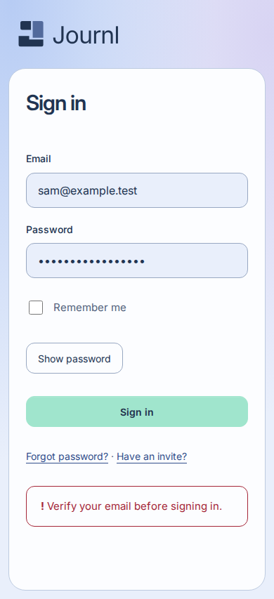
SHA256 143a0a0bb0890393dd7580b8459cef9c6e6570d0f03a081c4988bab676f4d32d

SHA256 db9003a2a7e4f9fb57a545cf76c5a493511c5f4ff2471b567ea2261892ce015d
Sign in · provider-error
sign-in-provider-errorActions and implementation pointers
Journl · Show password · Sign in · Forgot password? · Have an invite?
apps/web/src/components/auth/sign-in.tsxapps/web/src/components/auth/sign-up.tsxapps/web/src/components/auth/invite-code-form.tsxapps/web/src/components/auth/reset-password.tsx

SHA256 5d0270026fad347216f552f3d77f6bf147facfaed2192f91c429463a989e55cd

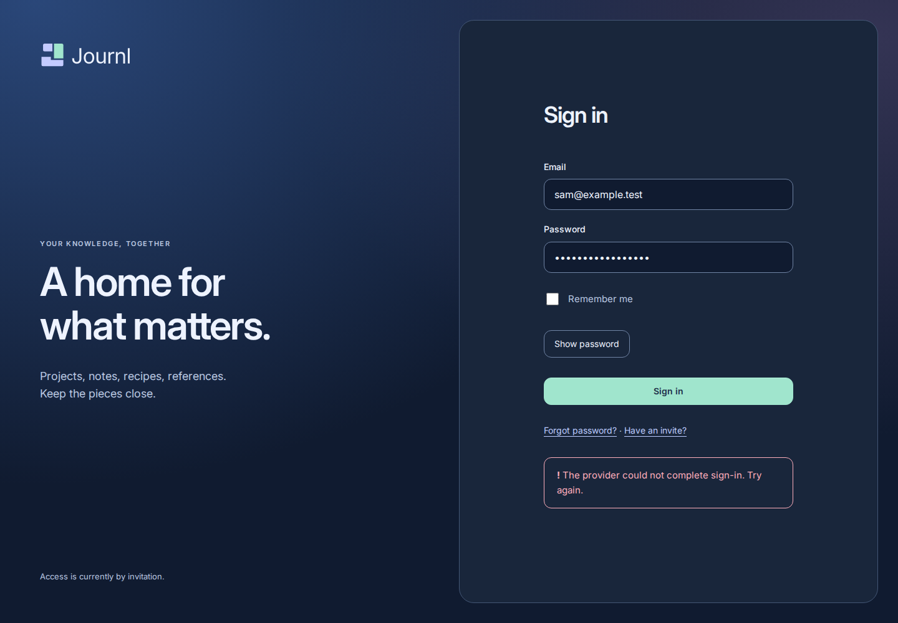
SHA256 22b8981ac2e78fcfda2441a24c5dba92fbef272ea2745f5a0b3844ec50c7396a

SHA256 325f54c4dc44243e5bd1f6df94132c02356b59b75654e15615f5bf453afe00c3

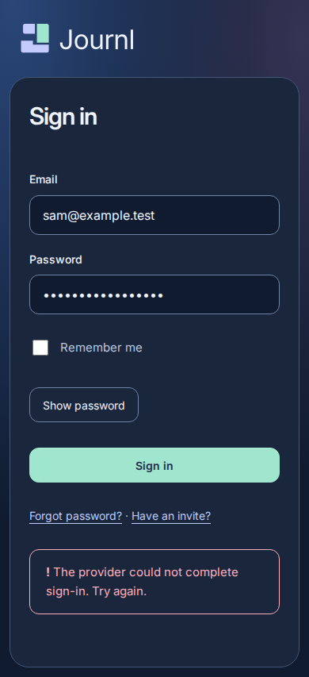
SHA256 14b8d2f0d380a692e05738fdf6d2ba3a1b76406390152fb6c287c80b05cbf5b7
Continue with your provider
provider-redirectActions and implementation pointers
Journl · Return to sign in
apps/web/src/components/auth/sign-in.tsxapps/web/src/components/auth/sign-up.tsxapps/web/src/components/auth/invite-code-form.tsxapps/web/src/components/auth/reset-password.tsx

SHA256 c095b3c8141e05ba6278ab5c7aef95c925c551dbf8d843b73d651dd2ef1b97f4

SHA256 f63089cdf8b29480f3d75576247ecbbb955e142854d8e633b35d9188e4a29061

SHA256 b09ec85e96966aabc8fa64b1660a7a2e52adc5f372a73a5b3c19173f081faa50

SHA256 1bc98dd39801c74b5c1f98618f91038871912699eb94b8f2efa8da59ffb0aa4c
Invite · empty
invite-emptyActions and implementation pointers
Journl · Check invite
apps/web/src/components/auth/sign-in.tsxapps/web/src/components/auth/sign-up.tsxapps/web/src/components/auth/invite-code-form.tsxapps/web/src/components/auth/reset-password.tsx

SHA256 5dd1b2b7c88e7cda84354d446734c77e3c7cba0a59c64fe4fcfe80f8ed7b69e5

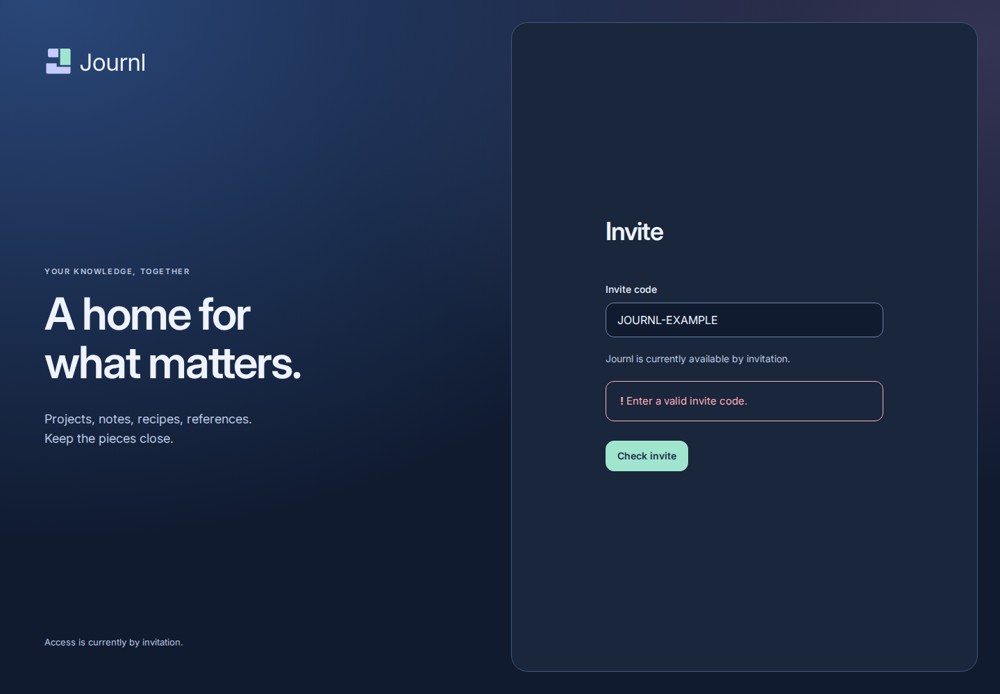
SHA256 ca8fbf55a9be396cc5ba21cdd7a9b2254009dc76a8e46bec5fe3647bf471a312

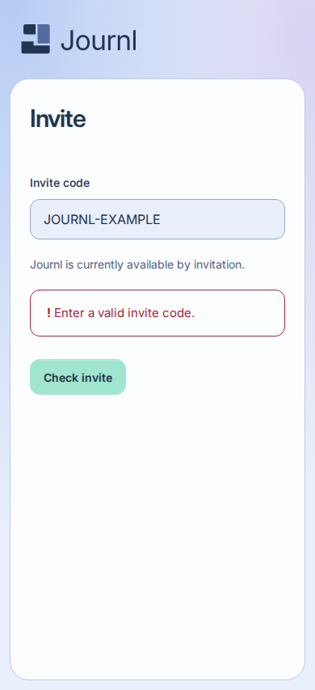
SHA256 ba52bdecd9a43808a7245d9ec24e4d17896e6c9a95ad9e4b267681e84b242cd7

SHA256 42db6841c69cf01524f79bf6db29acb2589d3078c12ee6ee49f9a421d2e6fccf
Invite · invalid
invite-invalidActions and implementation pointers
Journl · Check invite
apps/web/src/components/auth/sign-in.tsxapps/web/src/components/auth/sign-up.tsxapps/web/src/components/auth/invite-code-form.tsxapps/web/src/components/auth/reset-password.tsx

SHA256 ddc761dad51e8db2d51d0ec4470ca7cc0c049ead7d81edd44cc6c6a4c09a006d

SHA256 1b4bdc4c0bce8bae2fc9ca2bdb1bb738e69f3436f2277419e9c736ade4080f3d

SHA256 c3983d463399e101e988c3a5c84dd1f90d560f4b207bc3918ab796f599cb01b7

SHA256 0abf75acd5fba10c834add9ec239bd887014ec1ec0accb2fcaa891c9a134ce9a
Invite · expired
invite-expiredActions and implementation pointers
Journl · Check invite
apps/web/src/components/auth/sign-in.tsxapps/web/src/components/auth/sign-up.tsxapps/web/src/components/auth/invite-code-form.tsxapps/web/src/components/auth/reset-password.tsx

SHA256 b5125d0b9f15f5573a53366ccc70e1991995ca21c1396bbd2148f177cf96d8ea

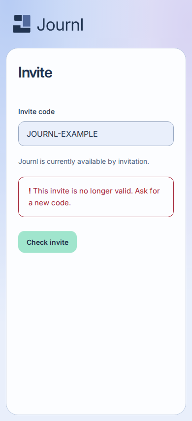
SHA256 5d3a818b8e8d6d2e4f20370d34aaf8c1964dd649a056ee3a8453589760593993

SHA256 1470ab0d24f47ef34036239b03a454667e274e3cf4e9970be8db1812936ead54

SHA256 707562f7a18d3f11479fe1a4e630881fd8435c9d61e8e4dc755484a1e4fe2a58
Invite · checking
invite-checkingActions and implementation pointers
Journl · Checking…
apps/web/src/components/auth/sign-in.tsxapps/web/src/components/auth/sign-up.tsxapps/web/src/components/auth/invite-code-form.tsxapps/web/src/components/auth/reset-password.tsx

SHA256 537a84c600b8cdf74baebf7f1eff860e2cc42ba2f1fce5caa9e9374a8c4ad20c

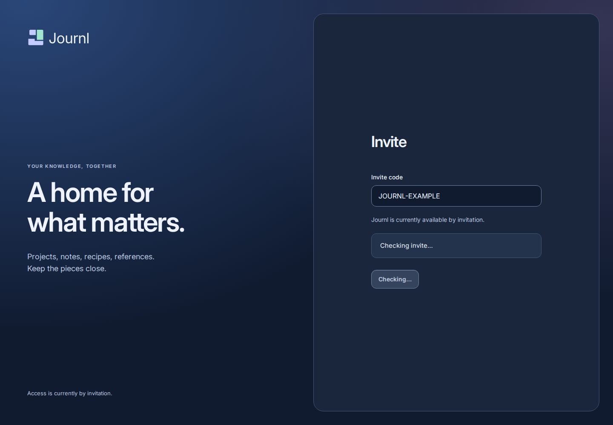
SHA256 546cc3f56e157a6f4e0a0c199a39b83a77cb95308a8b4c119961be301b146191

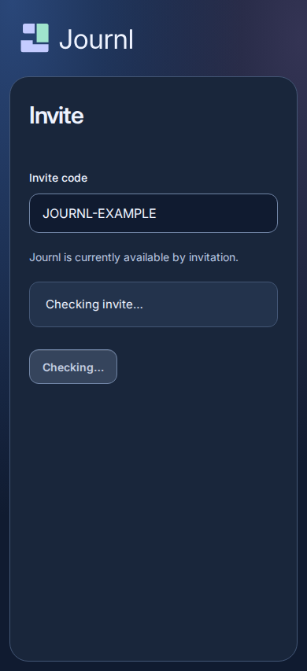
SHA256 73d86129b536c910ad972e982e58bd2acfc08b26c53750c8ddbbde8bbc3a29a5

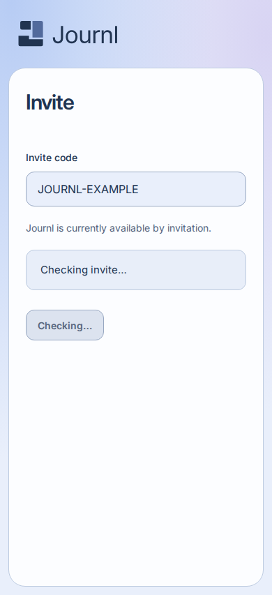
SHA256 1e469e2e59c852fed3146243502153d0eddb2cc3363089b84f9fe4346355a176
Invite · network-error
invite-network-errorActions and implementation pointers
Journl · Check invite
apps/web/src/components/auth/sign-in.tsxapps/web/src/components/auth/sign-up.tsxapps/web/src/components/auth/invite-code-form.tsxapps/web/src/components/auth/reset-password.tsx

SHA256 a78645ac89c4ac7b31aa30411f20351d5ff36de1d051794a7b1740b22b228dcc

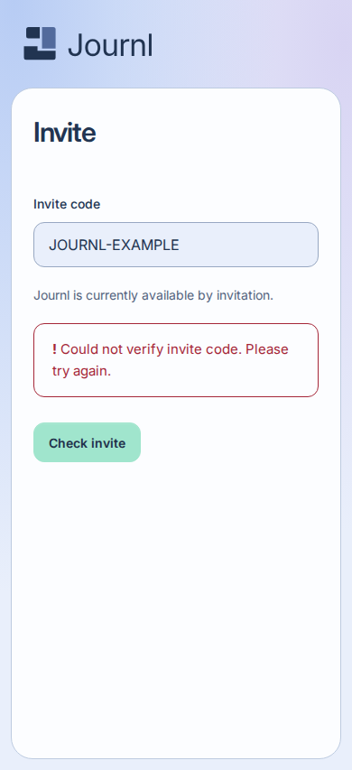
SHA256 e02764fe3996b78a92c2ac9fb5223ac06a7abb0254bd753a95314c21d0c388c4

SHA256 b17366c82ad1a71aa36291c3c6df171af3332b6776f33af3e6be61998a1d4b91

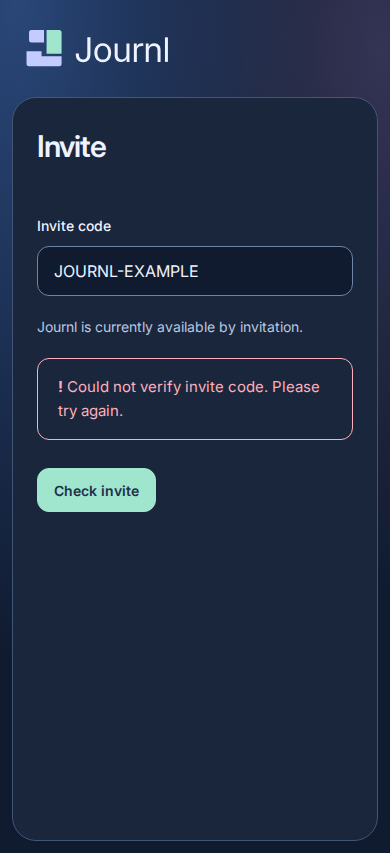
SHA256 4285ead0fbb6a804437bfbdaad94b7fc87abbfa2de6a418a7d73093411dd6e5a
Invite · intercepted dialog
invite-modalActions and implementation pointers
× · Close · Check invite
apps/web/src/components/auth/sign-in.tsxapps/web/src/components/auth/sign-up.tsxapps/web/src/components/auth/invite-code-form.tsxapps/web/src/components/auth/reset-password.tsx

SHA256 7a057c1df3ac43f47d525e88cc76c717054851706749d2ce27275853d22073ca

SHA256 03eb49a449924b094491eac1e84a1b6e76e07632529b7cea74c13d2a423866e7

SHA256 5ab2c8923f2b7d00db8c1935e9ba64b0c650ff521b5c50686d4c303046a8c16b

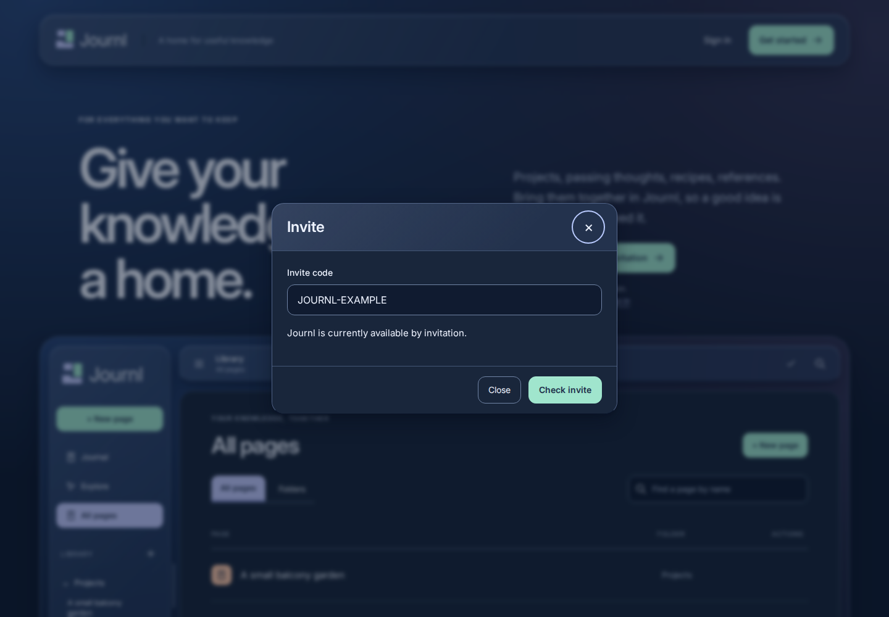
SHA256 f82ec7153de1caeda93b7504e8c7fe5b401f3db0698d60288489d1e3ac9caeb8